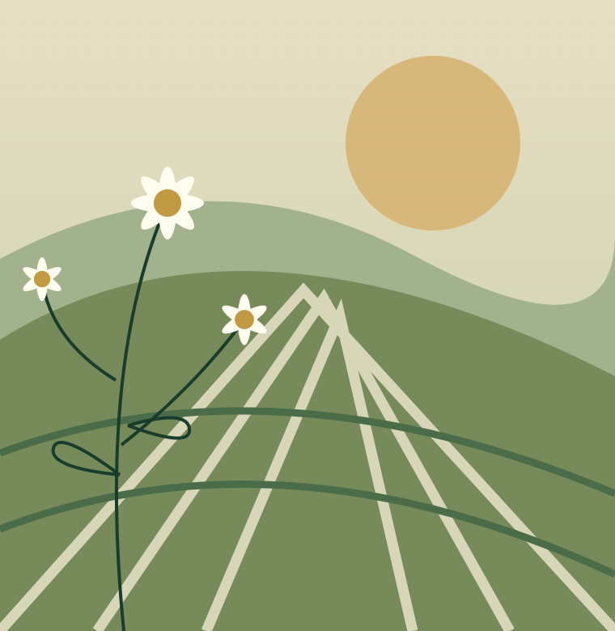

It all begins with the land.
Egyptian herbs, spices and botanicals. Explore the crops, discover the forms and start building your next sourcing project.

Follow the ingredient.
A guided journey from cultivation to export. Explore each stage; actual company-specific records and footage will be added after approval.
Nature, in its many forms.
Browse the historical catalogue inventory. Names and applications are drafts; actual availability, grades and specifications require confirmation.
Nature has its own calendar.
Planting, growing, harvest and commercial availability are distinct. No crop dates are invented for this preview.
Evidence before promises.
Certification scope, issuer, validity and verification matter. Marks shown on the former website are not evidence of current certification.
Growing relationships.
Explore the planned company journal. No dates, exhibitions or visitor records have been fabricated.